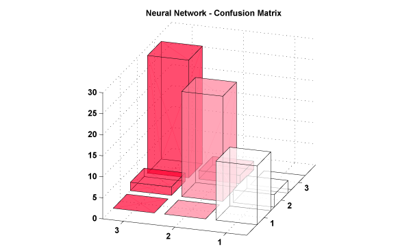
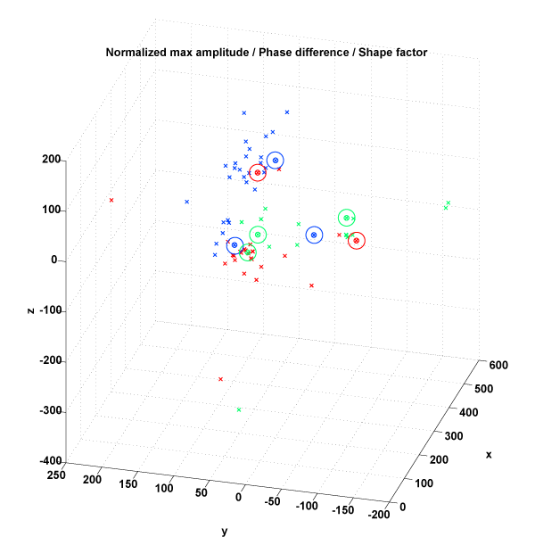
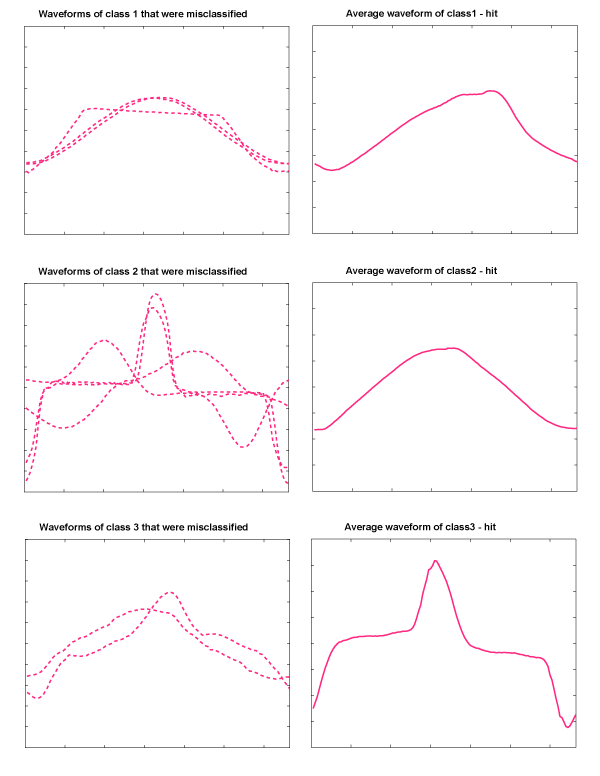

Neural Nets
We trained a neural network. Since Neural Networks are opaque in terms of how they work, we relied on experimentation to fix our parameters. The parameters that gave the best results on a small test set were:
- 1. 20 Neurons.
- 2. 2 Hidden layers.
- 3. Tansigmoidal transfer function.
- 4. Cross validation for results.
Feature Selection: We decided to choose from a list of 7 hand-crafted features (detailed in previous section), and from 4 dimensions with the highest variance, which in turn were selected by doing principle component analysis on current wave time series. We ran an exhaustive search for the best possible features (trying all 2043 possible combinations).
Results
Neural Networks performed worse that the KNN algorithm (77%, as compared to 87% from KNN).Figure: Confusion Matrix for Neural Network based classification.

In order to tweak the classification algorithm, we decided to investigate which samples were getting misclassified. If we plot the samples on a 3 dimensional graph (more than 3 dimensions are used for actual classification, hence this plot is only indicative of the spread).
Figure: Scatter Plot 
Green Circles - KNN misclassified.
Blue Circles - Neural net misclassified.
Red - Both methods misclassified.
From looking at the location of points on the scatter plot, it seemed that the classification algorithm was performing well. The challenge is then feature design, based on how waveforms are.
Figure: Misclassified Waveforms and Mean Waveforms of their class.
 The plots on the left show misclassified waveforms that belong to the class whose mean waveform is plotted in the second column. This shows how the waveforms in the left are distinct from the training waveforms. Notice that the 'mean' waveform is displayed here to serve as a 'representative' example of the given class. Hence, the features we propose are intrinsically different. This indicates that the classification rate of over 80% is the best we can get. We discuss further strategies to improve identification rate in the conclusion.